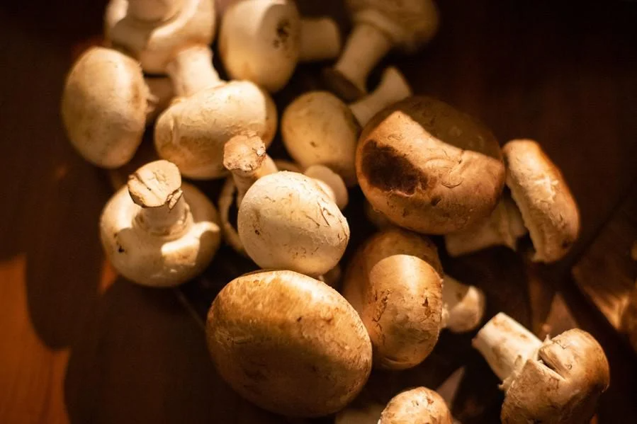
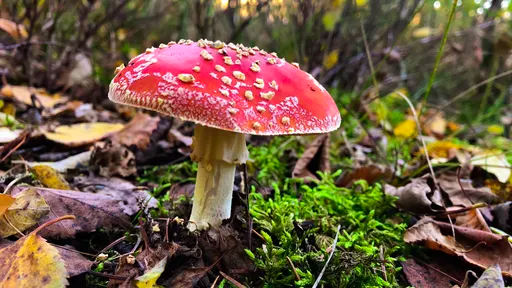

6 curiosidades sobre fungos que ninguém te contou

Há fungos com 17 mil sexos biológicos
Um estudo publicado no último dia 31 na revista PLOS Genetics indica que certas espécies de fungos têm milhares ou mesmo dezenas de milhares de sexos biológicos, especialmente um cogumelo chamado Trichaptum. Através de sequenciamento de DNA, a equipe percebeu que o sexo desses cogumelos era controlado por duas regiões do genoma, conhecidas como MATA e MATB, e que cada uma dessas regiões tinha muitos alelos possíveis.
Os pesquisadores identificaram quais partes das regiões genéticas MATA e MATB eram importantes para a determinação do sexo, e ao contrário do número de diferentes variações relevantes nessas duas áreas, apontou impressionantes 17.550 combinações.
Fungos matam mais que câncer de mama ou malária
Em entrevista ao site Mirror UK, cientistas da Exeter University afirmaram que as infecções fúngicas devem ser levadas mais a sério, considerando que existem mais de 150 milhões de casos graves em todo o mundo, e mais de 1,5 milhão de mortes por ano. Além disso, as infecções causadas por leveduras e fungos estão se tornando cada vez mais difíceis de tratar.
A condição representa uma ameaça especial a pacientes com covid-19 ou câncer, conforme comentam os cientistas. Acontece que os fungos agem quando nosso sistema imunológico está enfraquecido.
Cogumelos conseguem se comunicar entre si
No início do mês, um artigo publicado na Royal Society Open Science apontou que cogumelos podem se comunicar através de impulsos elétricos. Na ocasião, os pesquisadores identificaram certas repetições frequentes desses impulsos, e concluíram que algumas espécies podem utilizar até 50 dessas variações.
A ciência descobre 2 mil novos fungos a cada ano
De acordo com um relatório intitulado State of the World's Fungi, conduzido por uma equipe de mais de 100 cientistas (provenientes de 18 países diferentes), foi possível descobrir que mais de 2 mil novos fungos são descobertos a cada ano, a partir de uma variedade de fontes, incluindo uma unha humana, e que centenas de espécies são coletadas e consumidas como alimento, gerando uma economia de R$ 235 bilhões por ano.
Os fungos são parte da razão pela qual existimos

Segundo uma equipe da North Carolina State University, a falta de luz solar que se seguiu ao impacto do famoso asteroide que acabou com 70% de toda a vida na Terra fez com que a vida vegetal que não morresse com o impacto começaria a decair rapidamente, criando condições para que os fungos se espalhassem rapidamente. Quando isso aconteceu, o sangue quente dos mamíferos evoluiu, em parte, como resposta à pressão dos fungos.
Decompositores mantêm as florestas vivas
Cientistas da Cardiff University (País de Gales) apontam que, sem fungos para ajudar na decomposição, toda a vida na floresta logo seria enterrada sob uma montanha de matéria vegetal morta. Os fungos decompõem a matéria orgânica morta e, ao fazer isso, liberam nutrientes que as plantas usam para continuar crescendo.